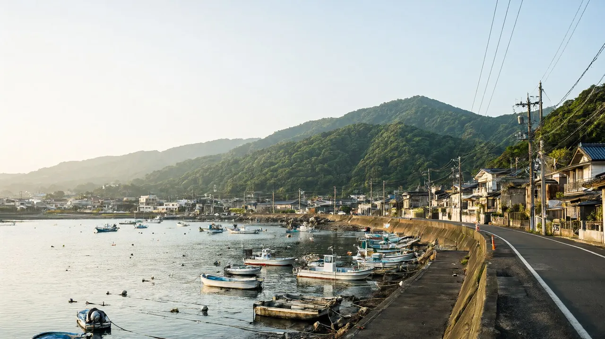

규슈

규슈 권역에서 지금 열려 있는 도시와 글을 한곳에 모았습니다. 이 글은 두 도시 중 어디를 갈지, 또는 둘을 어떻게 묶을지를 정하도록 돕습니다. 자세한 내용은 각 도시 허브에서 확인하세요. 기준일 2026-10-22. 엔화는 100엔 837.70원(2026-10-21 시장 중간환율)으로 환산한 약 값이며, 현찰 환전은 이보다 비쌉니다.
권역 한눈에 보기
한 줄 요약: 후쿠오카는 공항에서 시내까지 가까운 먹거리 도시, 구마모토는 성과 아소, 구로카와를 잇는 자연 도시이며 둘 사이는 신칸센으로 30분대, 버스로 2시간 남짓입니다.
| 구분 | 내용 |
|---|---|
| 이 권역이 맞는 사람 | 인천에서 직항 약 1시간 30분으로 짧게 다녀오고 싶은 가족. 도시 한 곳은 편하게, 다른 한 곳은 자연과 온천으로 변화를 주고 싶은 가족 |
| 덜 맞는 사람 | 대형 테마파크가 여행의 중심인 가족(두 도시 허브에서 확인한 시설은 어린이 박물관, 수족관, 동물원, 성 규모). 쇼핑과 야간 놀거리가 중심이면 구마모토는 덜 맞음 |
| 추천 체류 일수 | 도시 한 곳이면 후쿠오카 2박 3일~3박 4일, 구마모토 3박 4일. 두 곳 묶기는 4박 5일부터 |
| 두 도시 직항 | 후쿠오카와 구마모토 모두 인천 직항이 있어 들어가는 도시와 나오는 도시를 다르게 잡는 방법도 있음(항공권 조합 가격은 확인 필요) |
도시 비교
| 도시 | 한 줄 요약 | 비행시간 | 추천 일수 | 아이 적합도 |
|---|---|---|---|---|
| 후쿠오카 | 공항에서 하카타역까지 지하철 약 5분, 아이와 가기 쉬운 근거리 도시 | 인천 출발 직항 약 1시간 30분 | 2박 3일 ~ 3박 4일 | 높음 |
| 구마모토 | 구마모토성과 아소, 구로카와를 렌터카로 잇는 가족 여행. 지진 후 현황 포함 | 인천 출발 직항 약 1시간 30분 | 3박 4일 (2박 3일~4박 5일 가능) | 보통 |
| 벳푸 | 지옥순례와 온천, 모래찜질을 하루 안에 즐기는 규슈 동부 온천 도시 (직항은 대한항공 동계 한정) | 인천 출발 직항 약 1시간 35분 (대한항공 동계 주 4회, 10월 말~3월) | 3박 4일 (2박 3일 가능) | 높음 |
| 나가사키 | 세계 신3대 야경과 짬뽕, 하우스텐보스를 묶는 규슈 서부 역사 항구 도시 | 인천 출발 직항 약 1시간 30분 (대한항공 코드쉐어, 겨울 주 4회) | 2박 3일 ~ 3박 4일 (후쿠오카와 묶으면 4박 5일) | 보통~높음 |
예상 비용은 도시마다 계산 범위가 달라 바로 비교할 수 없습니다. 각 허브의 예산 항목에서 포함 항목을 확인하세요.